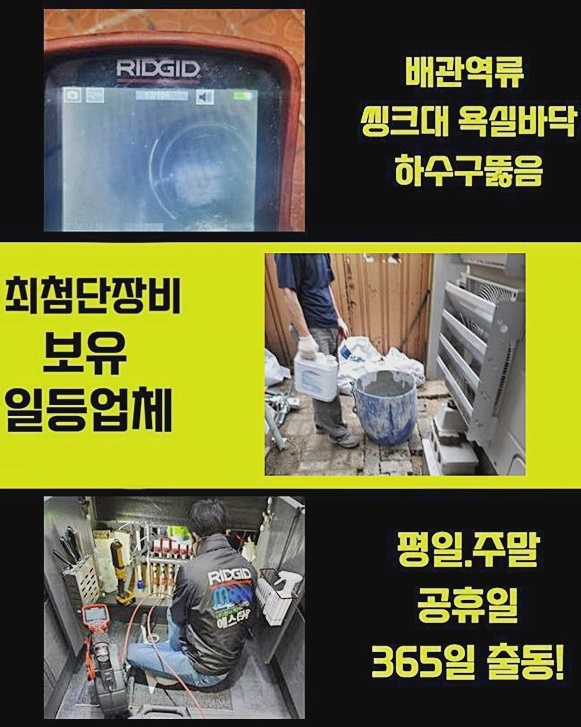
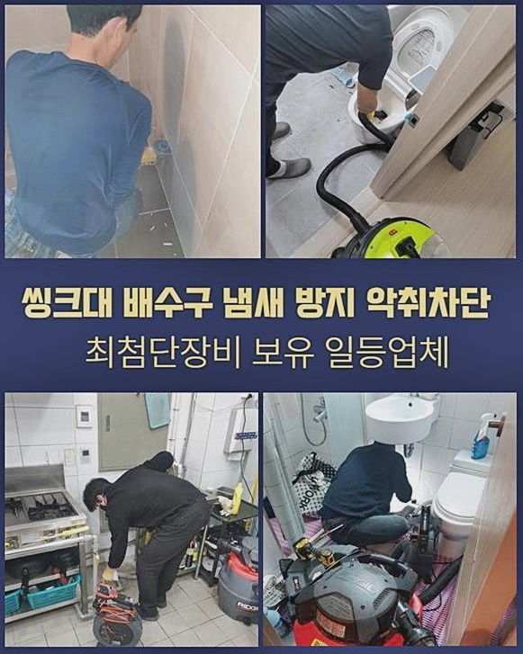
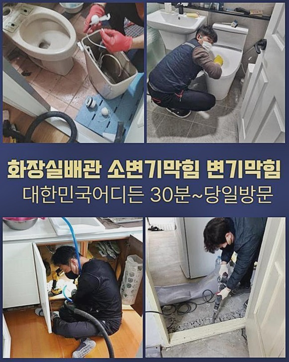
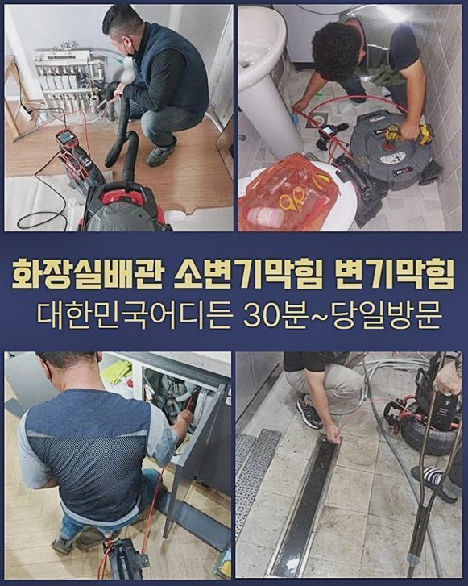
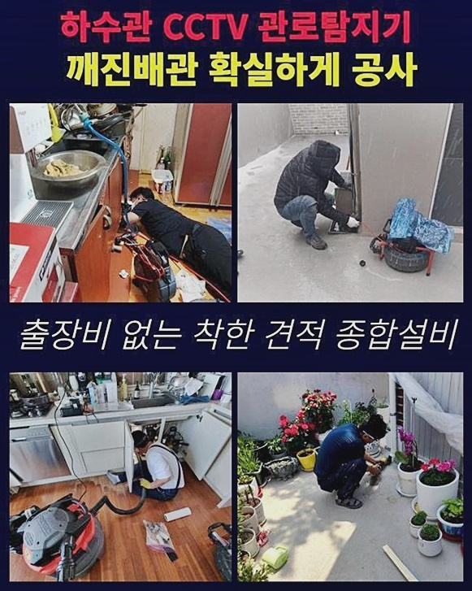
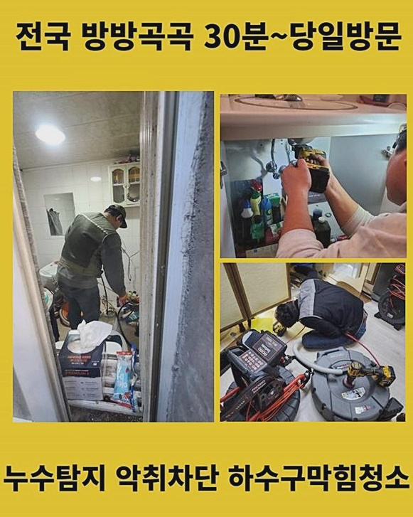
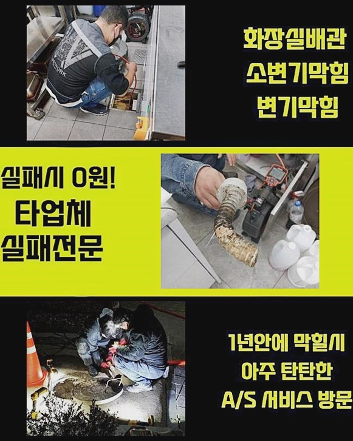

🏠 수원 입북동씽크대배수구역류 권선동 하수구뚫는곳 배관설비공사
수원 싱크대막힘 전문 시공 후기

📋 작업 개요
- 위치: 수원
- 서비스 유형: 싱크대막힘, 하수구막힘, 배관막힘, 역류해결, 뚫는업체, 배관청소, 고압세척, 설비공사
- 작업 일시: 2024. 7. 16. 10:12
- 업체명: 하수구수사대 (010-5615-2118)
🔍 문제 상황
수원 입북동씽크대배수구역류 권선동 하수구뚫는곳 배관설비공사
자주 발생되는 배수문제를 잠재우고 원래대로 돌려놓는 전문업체입니다
여러분들이 불러주시면 꼼꼼히 여러 내용에 있어서 상담을 이어갑니다
얼마전 욕실쪽에서 하수관이 기능 상 문제를 겪고있다는 문제로 빠르게 의뢰인이 계신곳으로 방문했어요
욕실공간은 사용을 하고난 뒤에는 머리카락이라던가 다양한 이물이 쌓이게되어 배수장애가 생기는 현장들도 상당해요
이와 비슷한 증상에서는 마트에서 구입가능한 개체로는 증상을 꺼트리는것이 쉽지 않아서 작업 시 전문용도로 쓰이는 기계를 통해서 문제양상을 보이는 구간을 청소해줘야하죠
일부 고객님들은 가열된 수도를 부어서 증세가 심각한 원인을 사라지게끔 시도해보시는 고객님들도 있으십니다
이러한 방식도 증상완화를 꾀하는데에는 무리가 따라요
끓어오른 온수들을 붓는다면 이물질은 이전보다 더 굳어버리게되는 특징을 가지고 있어서 배관 컨디션을 악화시킵니다
이같은 사항으로인해 하수구의 증상의 경우엔 뛰어난 장비를 통해야되겠습니다
수리 진행 시 사용하는 기기를 점검을 위해 체크하고 의뢰인이 말씀하신 댁으로 신속히 달려갔죠
단순한 하수구의 문제말고도 말씀드렸다시피 머리카락과 석회들로 구성된 이물이 켜켜히 쌓이죠

🔎 원인 분석
💡 전문가 진단: 정밀 진단 장비를 사용하여 슬러지의 고착 여부를 판명하고 타격/세척 작업을 실시했습니다.
이러한 이유로 주기적으로 청소를 해야되겠습니다
고객님께는 해결책들을 안내하고 곧이어 증세를 살펴 불편을 얼마나 잘 헤쳐나가는지 낱낱이 말씀드릴게요
증세가 심각한 지점은 욕실공간에 자리한 바닥부분이였어요
확인하니 쉽게 볼 수 있는 사각형태의 부속품은 아니었고 트렌치부품으로 보였는데요
배수불가는 물론 갑자기 역류되는 증세도 지속되고 있었습니다
통상적으로 트랩부속을 거쳐 라인으로 빠지지못한 잔여물은 여과하여 이물질만 남겨두고 하수는 하단으로 운반시키는 순기능을 하죠
허나 안측에 쌓여있던 오염물이 배관 위로 역류를 동반하며 트랩부분도 도움이 될 수 없는 모습이였습니다
고객분은 증세들이 심해지고 해당 장소를 사용할 수 없다며 불편을 토로하셨었는데 상당히 불편했을것으로 판단되었는데요
위처럼 욕실쪽의 설비쪽에서 증세가 발생된다면 여러방면에서 피해들이 불거질거에요
이로인해 조속하고 명확하게 원인을 완화하는게 가장 중요합니다
일단 문제들의 근원지부터 아는것이 중요해요
머리쪽의 촬영부속이 접착된 내시경기로 하수라인으로 넣어줄 땐 내부상태를 파악해가며 이물 누적의 양상을 보고 수리를 하게되죠
이때문에 여러가지의 문제가 발생했을때 필수적으로 써줘야되는 전문기기죠

🔧 작업 과정
입구에서 잔해가 상당했던 탓에 장치들을 배수라인으로 투입시키는게 힘들었죠
허나 증상에 있어서 좌절할 수 없습니다
반복적으로 시도하니 드디어 장비를 삽입시켰고 깊숙한 지점도 체크해보려고 영상을 보다가 시야확보에 문제가 있었어요
엘보구간엔 슬러지들도 어마어마했죠
심지어 배수과정을 확실하게 파악할 수 없는것으로 판단해보니 바깥쪽과같이 심부에도 많은 양의 슬러지가 쌓여진걸 확인했죠
또 배관으로 내시경을 넣으니 벽측에선 알 수 없는 이물이 보였습니다
라인의 끝머리에는 정체가 불분명한 형태들로 축적된 이물이 확인되었어요
기기를 삽입시켜도 틈들은 협소했지만 고착화된 이물은 눈에 띄게 목격되었죠
이물이 파악되지 않았어도 흡착된 이물들이 라인의 끝머리서부터 누적되어버린걸 체크했습니다
애로사항이 많던 장소였음에도 고객분의 문의인지라 그저 바라만 볼 수 없었죠
초입에 누적된 대형의 잔해물질은 손수 걷어내주고 배수관 안에 쌓인 개체는 샤프트 기기를 통하여 청소할 예정이였습니다
성능좋은 도구들을 이용하였기에 조속히 작업에 착수했습니다
그러나 슬러지들을 세척해주며 이해가 되지 않던 것이 있었는데요
어째서 바닥지의 조각이 하수라인에서 자리하고 있던건지 의문이였죠
이러한 상황을 알고서 작업을 하다보니 고객분은 해당 사항들을 운을 떼기 시작하셨어요
듣고보니 얼마전 도배를 맡겼는데 예상컨대 조각이 하수도로 투입된걸로 예상된다고 하셨죠
공사 진행뒤에 쓰레기들은 그 업체들이 폐기시키는게 맞습니다만 간간이 정리하는것에 소홀한 전문가면 오늘과같이 바람직하지 않은 방법으로 잔해물을 배출하는데요
추측하건대 저희의 전문가가 내방했던 곳에서부터 이와같은 문제로 불편을 지속적으로 받으신것으로 보였어요
곳곳에 장판오염물이라는 폐기물들이 통수를 방해하는 바람에 나갔어야하는 물들이 역류해버린거죠
반복을 거친 이물청소와 흡입절차까지 진행했더니 끝내 하수관을 뚫었죠


✅ 작업 완료
배수가 온전히 돌아왔는지 테스트를 거치니 이전과 다른 양상으로 물들이 빠져나갔죠
시공 뒤에 이처럼 내려가야하나 하수도가 여러 이물질로 통수공간들이 확보되지 못해 고여버리다가 솟구치기까지 한것입니다
갖가지의 장소들을 방문드렸지만 같은 전문가의 입장에서 화가나기도 하고 의뢰자가 감수해야되는 불편들에 이입이 될 수 밖에 없어요
이처럼 증세들을 깔끔하게 수리해내고 저희의 전문가들도 주변정리를 끝내고 철수하였어요
갑작스럽게 혹시 증상이 보일 경우 이 글을 기초로 해 안전하게 수습하셨으면 좋겠어요
이 말고도 궁금증이 있으시면 때에 상관없이 연락주시어 질문을 남겨주셔도 좋고 주저없이 저희를 찾아주시면 여러분께 도움을 드릴 수 있도록 할게요!




⚠️ 주방 싱크대 배관 막힘 예방 수칙
- ✅ 기름기가 묻은 식기나 프라이팬은 설거지 전 키친타올로 반드시 기름때를 닦아내세요.
- ✅ 주기적으로 싱크대 개수대에 뜨거운 물을 가득 받아 한 번에 내려 배관 내부 기름을 씻어내세요.
- ✅ 배수구 거름망을 미세한 필터로 사용하시고 음식물 찌꺼기가 틈으로 새어 들지 않게 관리하세요.
- ✅ 베이킹소다와 식초를 뜨거운 물과 함께 일주일에 한 번씩 부어주면 배관 살균과 막힘 예방에 좋습니다.
💡 핵심 정리
- 확실한 장비 작업(내시경 점검 및 샤프트 스케일링)으로 원인을 뿌리 뽑습니다.
- 작업 후 1년 이내에 동일한 부위 재발 시 100% 무상 A/S 서비스를 보장합니다.
- 서울 · 경기 · 인천 전 지역에 24시간 언제든 긴급 출동할 수 있도록 항시 대기 중입니다.
❓ 자주 묻는 질문 (FAQ)
🚨 수원 싱크대막힘 문제로 고민이신가요?
정확한 원인 진단과 확실한 시공으로 재발 없는 해결을 약속드립니다.
24시간 긴급 출동 | 서울 · 경기 · 인천 전지역 | 1년 내 재발 시 무상 A/S